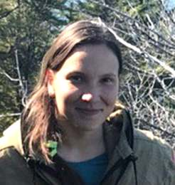

.left-column[ .mainbar[ ## Оценка влияния плавательных средств на поведение гренландских китов (*Balaena mysticetus*) в бухте Врангеля Охотского моря ### Морозова M., Платонов Н., Соловова А., Шпак O. ### ИПЭЭ РАН  ] - ## Введение <div class="authorpictute"> </div> ] .right-column[ .pull-left[ Бухта Врангеля – место регулярной концентрации гренландских китов (ГК, >50 единовременно) Июль-сентябрь – туристический сезон (иногда >50 чел единовр.) Основные виды активности: - катание на сап-бордах, наблюдение с катамарана/яхты/катера - Рыбалка с моторной лодки - Реже – плавание ] .pull-right[ <div class="figure"> <div class="framed" style="height:320px"> <iframe src="assets/widget_unnamed-chunk-4.html" width="1406" height="320" class="ursa-widgetize"></iframe> </div> </div> ] ] --- .left-column[ .mainbar[ ## Оценка влияния плавательных средств на поведение гренландских китов (*Balaena mysticetus*) в бухте Врангеля Охотского моря ### Морозова M., Платонов Н., Соловова А., Шпак O. ### ИПЭЭ РАН ] - ## Введение - ## Методы ] .right-column.scroll.double.smaller[ ### Концепция эксперимента Подсчитать количество ГК с берега не представляется возможным, но мы можем регистрировать всплытия, которые обычно соответствуют дыхательному акту, и отдельно выделять "длительные всплытия" (медленное плавание, признак спокойного поведения) Мы полагаем, что в данной бухте реакцией избегания ГК может служить (а) затаивание под водой, (б) смещение в свободную от людей часть акватории, (в) покидание бухты. Реакция (а) приведет к сокращению частоты всплытий, (б) - к противоположному изменению частоты всплытий в соседних частях бухты, (в) не может быть оценена в данном эксперименте ### Протокол наблюдений + ~~2020-08-22 - 2020-09-17,~~ светлое время суток, одна вахта 15 мин/час + три сектора L, C, R + число всплытий, количество и тип плавсредств по секторам, погодные условия - на каждую минуту наблюдений ### Анализ Формирование средневахтовых параметров по каждому дежурству в виде превалирующих условий наблюдений и частоты регистрируемых всплытий и присутствия плавсредств Выделение периодов изменения частоты всплытий и изменения туристической автивности с помощью непараметрической сегментации по отличию среднегупповых значений. Выявление зависимостей с помощью (обобщенных) линейных моделей для средневахтовых параметров и внутривахтовых характеристик со сдвигом по времени. Сравнение значений с помощью t-критерия Уэлча и U-критерия Манна-Уитни. ] --- .left-column[ .mainbar[ ## Оценка влияния плавательных средств на поведение гренландских китов (*Balaena mysticetus*) в бухте Врангеля Охотского моря ### Морозова M., Платонов Н., Соловова А., Шпак O. ### ИПЭЭ РАН ] - ## Введение - ## Методы - ## Результаты ] .right-column.double[ - Результат не зависел от наблюдателя (n=3, p=0.3063) - При наличии немоторных плавсредств на воде (в основном, сап-бордов) кол-во всплытий ГК сокращалось (для сравнения: Рис. 2 и 3) - Воздействия немоторных плавсредств были наиболее значимы в левом секторе BL, а также – в центральном BC. Чем больше фиксировалось лодок, тем меньше фиксировалось всплытий ГК. - В отношении моторных лодок зависимость не обнаружена, за исключением слабой в правом секторе BR. - Длительные всплытия: количество значимо увеличивалось в ясную погоду и штиль. В присутствии лодок и при волнении (значимость 94%) частота регистрации длительных всплытий снижалась. - При долгосрочных наблюдениях при снижении лодочной активности увеличение частоты всплытий происходило через несколько часов. - При разделении дня на две части (до/после 13:30) чем больше плавсредств было в первой половине дня, тем меньше всплытий регистрировалось во второй половине дня. ] --- .left-column[ .mainbar[ ## Оценка влияния плавательных средств на поведение гренландских китов (*Balaena mysticetus*) в бухте Врангеля Охотского моря ### Морозова M., Платонов Н., Соловова А., Шпак O. ### ИПЭЭ РАН ] - ## Введение - ## Методы - ## Результаты - ## Результаты (cont) ] .right-column.double[ - С сентября был отмечен спад турпотока. Результаты наблюдений разбиты на два интервала с использованием непараметрической сегментации по среднему значению. Частота всплытий в сентябре достоверно возросла (Рис. 4 и 5). - Различия в средних для всплытий, разбитых на те же группы по уровню беспокойства: t=-5.0, df=145.7, p.value<0.0001 (Welch Two Sample t-test) и W=1807.5, p.value<0.0001 (Wilcoxon rank sum test with continuity correction). ### Для размышления: - Отсутствие зависимости частоты всплытий от наличия моторных плавсредств может быть вызвано недостаточным числом наблюдений (в 20 раз меньше, чем наблюдений немоторных плавсредств), полученный результат требует верификации. - Смещение ГК по секторам - реакцию избегания (б) - нам не удалось определить в силу методических ограничений эксперимента. ] --- .left-column[ .mainbar[ ## Оценка влияния плавательных средств на поведение гренландских китов (*Balaena mysticetus*) в бухте Врангеля Охотского моря ### Морозова M., Платонов Н., Соловова А., Шпак O. ### ИПЭЭ РАН ] - ## Введение - ## Методы - ## Результаты - ## Результаты (cont) - ## Выводы ] .right-column[ .pull-left[ - Немоторные плавсредства (сап-борды) снижают частоту всплытий китов, т.е. вызывают реакцию избегания у китов - Зависимости между частотой всплытий и моторными плавсредствами не обнаружено (требуется увеличение числа наблюдений для верификации). - Выявлена обратная зависимость частоты регистрации спокойных китов от наличия плавсредств в бухте - Восстановление частоты всплытий происходит через несколько часов после снижения активности людей на воде. ] .pull-right.smaller[ Планируемая модификация эксперимента в 2021 г. - Увеличить длительность наблюдения - "привязать" наблюдения к периодам активности туристов и их отсутствия на воде (вместо привязки к астрономическому времени) - Увеличить число наблюдений с моторными плавсредствами - Рассмотреть использование БПЛА для учета численности китов в бухте и наблюдения за смещением китов в акватории как реакцией на присутствие людей в одном секторе - По согласованию с туроператором, выделить сектор "покоя", куда не могут заходить плавсредства и оценить использование китами этого сектора. ] .pull-down.small[ ---- Работа осуществлена по гранту, предоставленному Ocean Park Conservation Foundation Hong Kong (OPCFHK) ] ] --- class: break, no-print background-image: url("assets/field.jpg") background-size: cover count: false